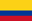

| Name | Affiliation | Country | |
| Yiannis Georgiou | ATOS - Bull | Greece | |
| Pedro Velho | ATOS - Amadeus | Brazil | |
| Carlos Jaime Barrios Hernández | UIS - Bucaramanga | Colombia |  |
| Robinson Rivas | Universidad Central de Venezuela | Venezuela | |
| Gilberto Díaz | UIS - Bucaramanga | Venezuela | |
| Joseph Emeras | Luxembourg | ||
| Xavier Besseron | University of Luxembourg | Luxembourg | |
| Name | Affiliation | Country | |
| Filip Kгikava | I3S, CNRS, Université Nice Sophia Antipolis | Czeck Republic | |
| Steffano Cozzini | CNR-IOM DEMOCRITOS | Italy | |
| Moreno Baricevic | CNR-IOM DEMOCRITOS | Italy | |
| Brigitte Plateau | Université de Grenoble | France | |
| Carlos Varela | RPI- World Computign Laboratory | Colombia | |
| Derrick Kondo | Université de Grenoble | USA | |
| Luis Nuñez | UIS - Bucaramanga | Colombia | |
| Michel Riveill | Université de Nice - Sophia Antipolis | France | |
| Philippe O. A. Navaux | UFRGS | Brazil | |
| Name | Affiliation | Country | |
| Bernabé Dorronsoro | Escuela Superior de Ingeniería University of Cadiz |
Spain | |
| Juan Carlos de la Torre Macias | Escuela Superior de Ingeniería University of Cadiz |
Spain | |
| Sara Buzon Lagomazzini | Escuela Superior de Ingeniería University of Cadiz |
Spain | |
| Joaquin Pizarro Junquera | Escuela Superior de Ingeniería University of Cadiz |
Spain | |
| Patricia Ruiz | Escuela Superior de Ingeniería University of Cadiz |
Spain | |
| Guillermo Barcena Gonzalez | Escuela Superior de Ingeniería University of Cadiz |
Spain | |
| Elisa Guerrero Vazquez | Escuela Superior de Ingeniería University of Cadiz |
Spain | |
| Pedro Galindo | Escuela Superior de Ingeniería University of Cadiz |
Spain | |
| Name | Affiliation | Country | |
| Arnaud Legrand | Université de Grenoble | France | |
| Jean-Louis Roch | Université de Grenoble | France | |
| Márcio Bastos Castro | Université de Grenoble | Brazil | |
| Nicolas Maillard | UFRGS | France | |
| Olivier Richard | Université de Grenoble | France | |
| Oscar Gualdron Gonzalez | UIS - Bucaramanga | Colombia | |
| Yves Denneulin | Université de Grenoble | France | |